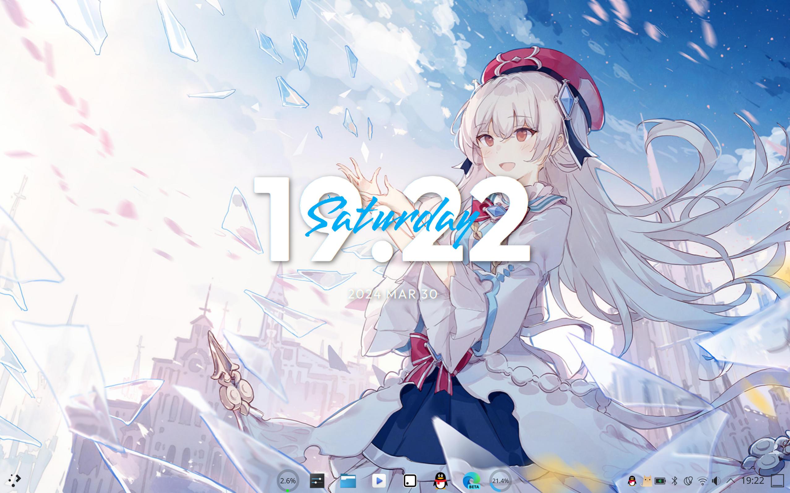
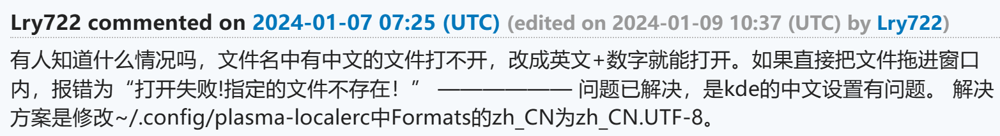
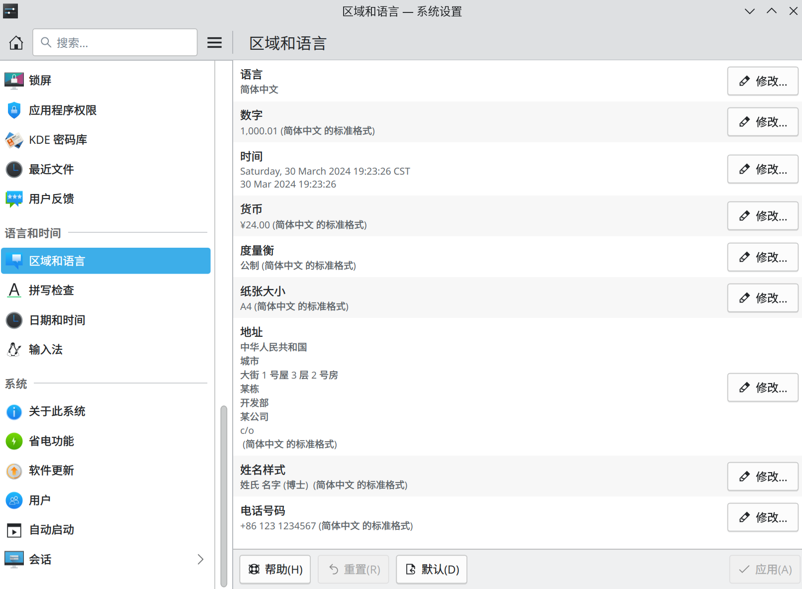

KDE Tricks (2) —— Locale，真叫人抓狂
需求
我的 KDE 桌面环境只使用了两个组件：
- ClearClock：在桌面显示时间、日期等信息
- Panel Transparency Button：类似于 Windows 端的 TranslucentTB，可让任务栏透明

其中 ClearClock 重叠在时间上方显示星期的方案让我很有兴趣。于是问题来了：如果本地 Locale 为中文，那么 ClearClock 的星期也会显示中文。但它只有英文的对应字体（而且我也很喜欢），使用中文的话只好关闭星期显示。
有人就要问了：那为什么不把 Locale 全部设置为英文呢？问题又来了：为了学习、办公，我安装了 WPS 的一套软件，但是它有个致命 Bug：如果本地 Locale 为英文，那么所有路径包含中文的文件，在通过 WPS 打开后，都会造成其未响应。

截至写作，该 Bug 未被修复。AUR 链接
操作
如果知道这一点，事情就会很好办：KDE 可以单独设置不同部分的 Locale。
显然，ClearClock 只涉及时间日期方面的 Locale。虽然不知道 WPS 涉及哪些方面，我还是把除了时间日期之外的 Locale 全部设置为简体中文。

于是问题就这么迎刃而解了。
后记
由于使用的发行版是 Arch Linux，在 2 月底滚动更新后，KDE 更新了 Plasma 5 到 Plasma 6。
于是很不幸的消息：Plasma 6 默认采用 Wayland，而我的系统在 Wayland 环境下有着致命问题，包括但不限于：
- sddm 登录后长时间黑屏
（真 · 星空） - 桌面应用程序 & 鼠标指针缩放问题
- 基于 Electron 的桌面应用完全无法打开
- 更改某些系统设置后会导致整个图形界面无响应
在经过一番斗争之后，成功换回了 X11，但是更新到 Plasma 6 后，原来 Plasma 5 的所有小组件都无法使用了。
好在 GitHub 的对应页面都有人提了迁移到 Plasma 6 的 PR，我也的确能使用它们。我的桌面环境终于又回来了！
本博客所有文章除特别声明外，均采用 CC BY-NC-SA 4.0 许可协议。转载请注明来源 Dean's Blog！

评论